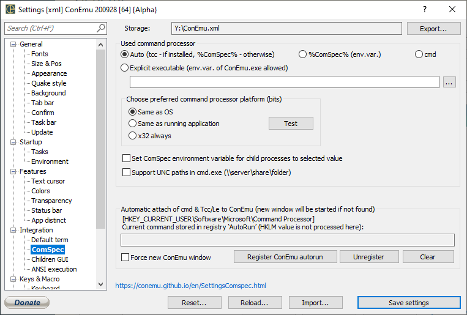

---
---
Settings: ComSpec

Used command processor
- Auto (tcc - if installed, %ComSpec% - otherwise) Start tcc - if installed, %ComSpec% - otherwise (used for ‘Create new ‘cmd.exe’ console’)
- %ComSpec% (env.var.) Use %ComSpec% environment variable (used for ‘Create new ‘cmd.exe’ console’)
- cmd Use cmd.exe only (used for ‘Create new ‘cmd.exe’ console’)
- Explicit executable (env.var. of ConEmu.exe allowed) Specified command processor (used for ‘Create new ‘cmd.exe’ console’)
Choose preferred command processor platform (bits)
- Same as OS 64bit OS only, (System32 or SysWOW64) - use System32
- Same as running application 64bit OS only, (System32 or SysWOW64) - same bits as application (ConEmu, Far Manager, ...)
- x32 always 64bit OS only, (System32 or SysWOW64) - use SysWOW64
Test Show ‘calculated’ ComSpec path
Set ComSpec environment variable for child processes to selected value ConEmu may update %ComSpec% variable to selected command processor
Cmd.exe output codepage Windows command processor (cmd.exe) may cause then output of internal commands to be OEM or Unicode. You may force this selection, or use automatic selection (FAR2 -> Unicode).
Support UNC paths in cmd.exe (\\server\share\folder)
Add to %PATH% environment variable
Add %ConEmuDir% to %PATH%
Add %ConEmuBaseDir% to %PATH%
Choose preferred command processor platform (bits)
Add to %PATH% environment variable
Automatic attach of cmd & Tcc/Le to ConEmu (new window will be started if not found)
[HKEY_CURRENT_USER\Software\Microsoft\Command Processor] Current command stored in registry ‘AutoRun’ (HKLM value is not processed here)
Register ConEmu autorun
Unregister
Clear
Force new ConEmu window